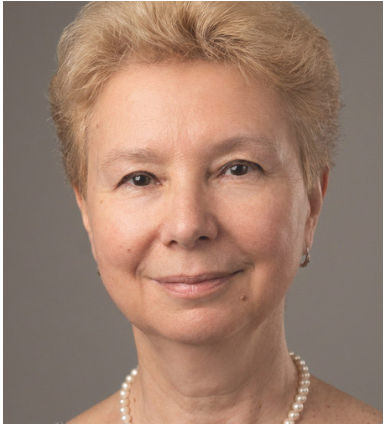
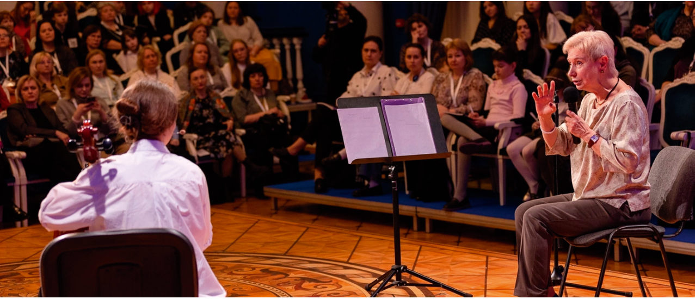

CELLO Педагог · с. 37–38
Интервью с Марией Юрьевной Журавлёвой
Педагог ЦМШ о возрасте начала занятий, конкурсах и сценическом волнении

В этой рубрике мы будем представлять наших замечательных педагогов: от ДМШ до консерваторий. Это будут интервью или полезные советы, статьи или методические заметки – всё, что поможет передать драгоценный опыт молодым педагогам и студентам, ученикам и их родителям. В этом выпуске мы взяли интервью у Марии Юрьевны Журавлёвой – легендарного педагога Центральной музыкальной школы.
CELLO Журнал: С какого возраста, на Ваш взгляд, оптимальнее всего начинать обучение игре на виолончели и что делать, например, если ребёнку очень хочется обучаться игре на инструменте, но ему уже девять-десять лет?
Мария Журавлёва: Если ребенку девять-десять лет и он хочет заниматься – тогда надо начинать. А если у него есть хотя бы небольшой опыт игры на фортепиано или скрипке, но виолончель понравилась больше, то однозначно стоит начинать.
На что Вы обращаете внимание при приёме ребёнка или студента в свой класс? И на основании чего Вы делаете положительный выбор?
Наша школа – это специальная школа. Ребёнок может сам начинать, но он будет чувствовать себя очень неуютно, так как на начальном этапе очень сложно продвигаться в отсутствие помощи. Поэтому неважно, музыканты родители или нет. Помогать могут бабушки, дедушки, репетитор. Это должен быть умный репетитор, в том смысле, что он не идёт вразрез со мной и мы движемся в одном направлении.
В одном из интервью Вы упоминали про необходимость изучения преподавателем детской психологии. Какую литературу Вы могли бы порекомендовать?
Любую литературу по возрастной психологии, так как детская педагогика – это на 90% детская психология. Педагог может нанести огромный вред своим неправильным поведением, потому что дети невероятно доверчивы и открыты ему.
Что я могу посоветовать? Можно начать с книги «Нестандартный ребёнок» чудесного советского психолога Владимира Леви. Он создал такую систему, которая, на мой взгляд, по-настоящему из педагога делает педагога, который ведёт ученика за руку много лет. Он проходит с ним все трудные возрастные периоды. Педагог должен сделать так, чтобы у ученика не пропал интерес к инструменту. Конечно, как тут без психологии? Просто невозможно. Поэтому вопрос изучения психологии очень острый и необходимый.
Знакомы с информацией, что Вы не сторонник бесконечных конкурсов. Но, к сожалению, в наше время имена исполнителей запоминаются именно после получения высших наград конкурсов. Отсюда вопрос: как Вы готовите своих учеников к выступлениям, экзаменам и конкурсам? Как учите справляться со сценическим волнением?
Я противник конкурсов вообще. У меня есть идея, что в нашей стране можно заявить о себе как о прекрасном виолончелисте и музыканте без конкурсов.

Отдельная, совершенно другая часть этого вопроса – сценическое волнение. Я не раз говорила и ещё раз повторю, что сценическое волнение – это неправильная, ошибочная работа педагога.
Я считаю, что детям нужно как можно чаще выступать. Где угодно: в библиотеке, в музыкальных школах, в разных залах, потому что к сцене нужно привыкать. А для детей это нетрудно. Если ребёнок выходит на сцену раз в полгода на зачёт, то для него это, конечно, очень непривычно. Очень важно для педагога знание репертуара и его последовательность. Материала должно проходиться очень много, и совсем не обязательно всё выносить на сцену.
Что стоит и категорически не стоит делать юному исполнителю в день концерта?
Если мы говорим о школьниках, то за мой 45-летний опыт могу сказать, что все очень индивидуально. Бывает, что ученик прибегает в последний момент, выбегает на сцену и прекрасно играет. Удивительное качество детей – мобилизоваться. При условии, что были хорошие, регулярные занятия. А бывает, к сожалению, наоборот: ученик приехал вовремя, утром позанимался, вышел на сцену, и не получилось.
Средние и старшие дети уже знают, что такое сосредоточиться. Этот навык у нас совсем непростой, так как правая рука делает одно, левая рука делает другое, в голове крутится текст, а его надо наполнять.
К юным опять же. Ваши три совета юным виолончелистам.
Детям я могу посоветовать одно: жить весело, но понимать, что учёба – это ежедневно. А вот средним, 12–13 лет, я бы пожелала такого качества как любопытство. Всё интересно должно быть. Не только произведения, которые изучаются в данный момент. Они должны много слушать, путешествовать, читать, смотреть хорошее кино. А если нет этого любопытства, то возникает очень простое состояние – скука. Ну как можно в юном возрасте скучать?
Совет молодым преподавателям.
Педагог должен сильно любить свое дело, а это встречается редко. Мне посчастливилось общаться с Александром Кирилловичем Федорченко. Он был настоящим, большим педагогом и музыкантом. Может быть, он и не мог сыграть «Танец эльфов» так, как его ученики, но мог научить играть эту пьесу. Просто педагогика требует терпения, а это очень редкое качество, которое быстро заканчивается. Но без него нельзя.